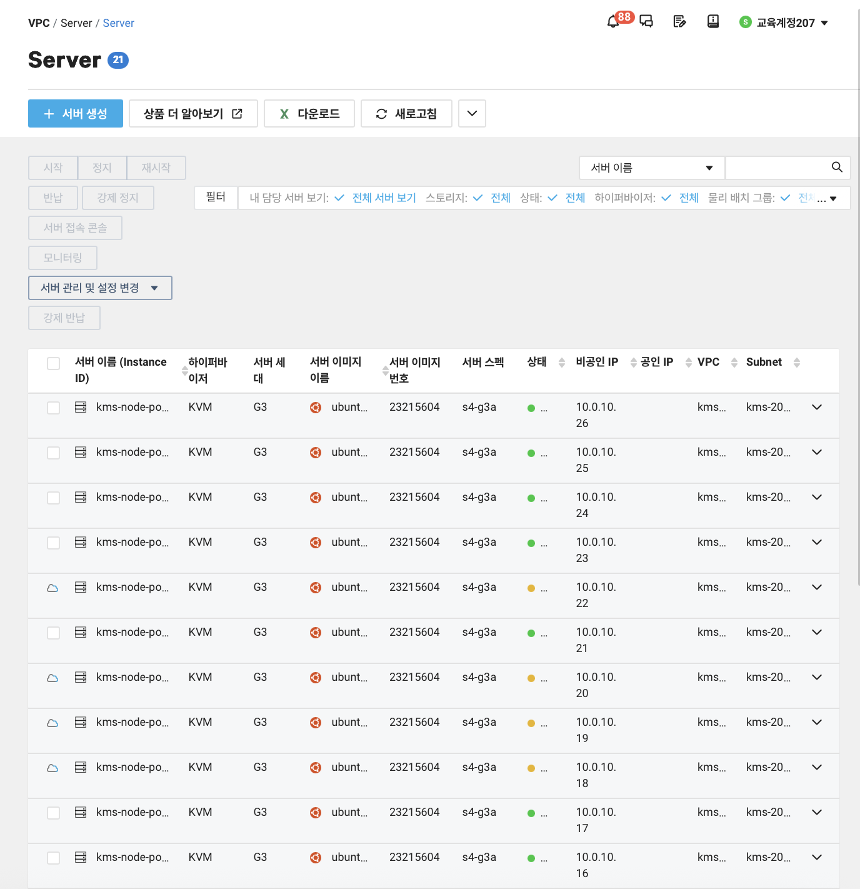

NCA 클라우드 실습 내용 정리
아래 항목들은 수강/실습한 내용 기준으로 정리했습니다.
1) 클라우드 모니터링 및 Auto Scale + Load Balancer
- Zone 이중화 로드 밸런서 구성
- 1) NGINX 서버 구성 및 HTML 변경
- 2) Load Balancer 신규 구성
- 3) kr1/kr2 부하 분산 만들기
2) PaaS DB 미니 프로젝트
- 1) CDB for Postgresql 백업 파일로 서버 추가 설치 2) app.py def con 부분 수정 3) 백그라운드 실행하고 nohup python3 app.py & > app.log

"PaaS DB 실습 최종 화면"
3) Cloud Native & NCloud Kubernetes
- 1) Auto Scaler 수행하기 2) kubectl get pods 명령어로 파드 상태 확인
- 3) 콘솔 → Server에서 추가 node 생성되는 서버 리스트 확인 
"파드 상태"

4) Docker Swarm 실습
- 1) docker-swarm-001 (리더노드), docker-swarm-002 (워커노드)
- 2) ACG inbound / Outbound VPC 모두 오픈
- 3) Docker 3번 실습/ 2개 서버에서 모두 수행
- 4) Docker swarm 클러스터 JOIN

"Docker Swarm 실습 최종 화면"